GUI: Generating output
In this chapter
This chapter describes how to generate (export) output (series, parameters, diagnostics) directly from the Graphical User interface:
When running a SA-processing in GUI, series, parameters, diagnostics can be also generated without opening it, using a production module called the cruncher.
Additional chapters related to GUI features, provide information on:
Output from SA Processing
Steps
Once a seasonal adjustment process for the dataset is performed Go to the TOP menu bar and follow the path: SAProcessing → Output…
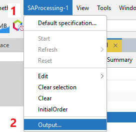In the Batch output window the user can specify which output items will be saved and the folder in which JDemetra+ saves the results. It is possible to save the results in the TXT, XLS, CSV, and CSV matrix formats. In the first step the user should choose the output format from the list.
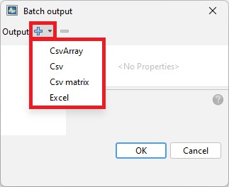
The user may choose more than one format as the output can be generated in different formats at the same time.

To display and modify the settings click on the given output format on the list. The available options depend on the output format.
The different ouput formats
For Csv format the following options are available:
- folder (location of the file),
- file prefix (name of the file),
- presentation (controls how the output is divided into separate files)
- and series (series included in the file).
These options are presented in the next points of this case study.
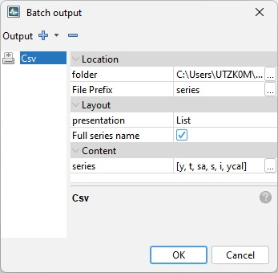
The user can define the folder in which the selected results and components will be saved (click the folder item and choose the final destination).
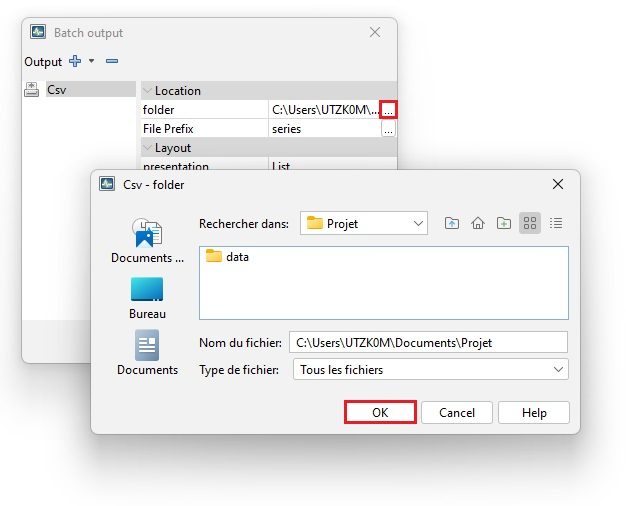
With the option File Prefix the user can modify the default name of the output saved in the CSV file.
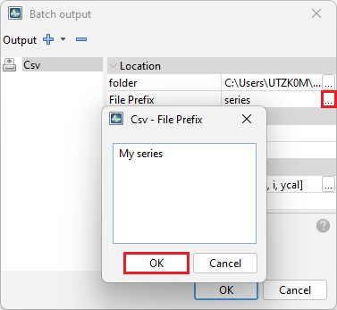
Presentation controls how the output is divided into separate files. Expand the list to display available options:
- HTable – the output series will be presented in the form of horizontal tables (time series in rows).
- VTable – the output series will be presented in the form of vertical tables (time series in columns).
- List – the output series will be presented in the form of vertical tables (time series in rows). Apart from that, for each time series each file contains in separate columns: the data frequency, the first year and stimation span, the first period (month or quarter) of observation span and the number of observations. The files do not include dates.
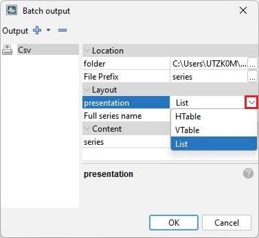
The option Full series name is used to use the fully qualified name of the series (workbook + sheet + name) in the output.

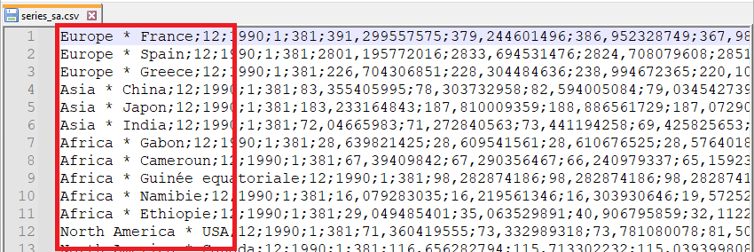
The Content section presents a list of series that will be included into a set of output files. To modify the initial settings click on the grey button in the Content section. The CVS-series window presents two panels:
- the panel on the left includes a list of all valuable output items
- the panel on the right presents the selected output items
Mark the series and use the arrows to change the settings. Confirm your choice with the OK button.
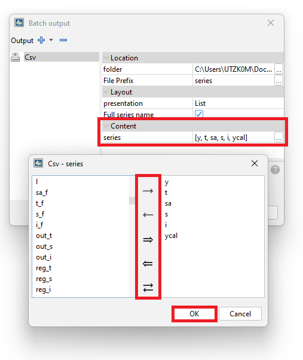
The CSV matrix produces the CSV file containing information about the model and quality diagnostics of the seasonal adjustment. The user may generate the list of default items or create their own quality report.
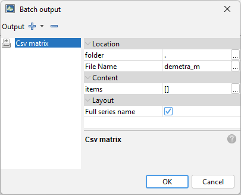
The user can define the folder in which the selected results and components will be saved (click the folder item and choose the final destination).

With the option File Name the user can modify the default name of the output saved in the CSV file.

By default, all the available items are included in the output.

Once the output settings are selected, click the OK button.
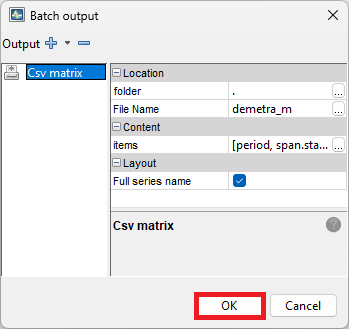
Options available for the XLS format are the same as for the TXT format with an exception of the Layout section.
- BySeries – all results for a given time series are placed in one sheet;
- ByComponent – results are grouped by components. Each component type is saved in a separate sheet;
- OneSheet – all results are saved in one sheet.
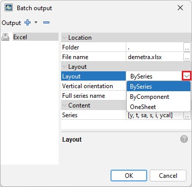
If the user sets the option layout to BySeries, the output will be generated as follows:
- Series are placed in separate sheets
- Components are placed in different columns

If the user sets the option layout to ByComponent, the output will be generated as follows:
- Components are placed in separate sheets
- Series are placed in different columns
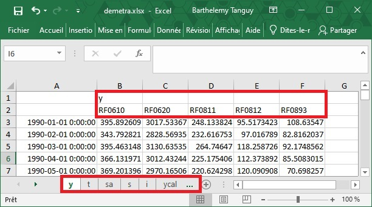
The option OneSheet will produce the following XLS file:
- Components and Sheets are crossed in different columns of the same sheet
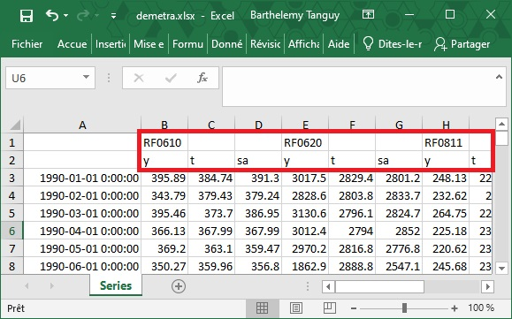
By default, the series in the Excel output files are organised vertically. When the user unmarks the check box the horizontal orientation is used.
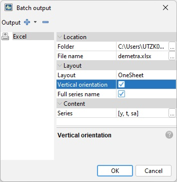
The option Full series name is used to use the fully qualified name of the series (workbook + sheet + name).
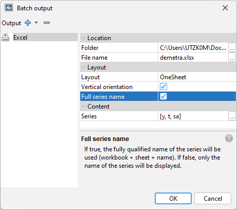
This option will produce the following XLS file:
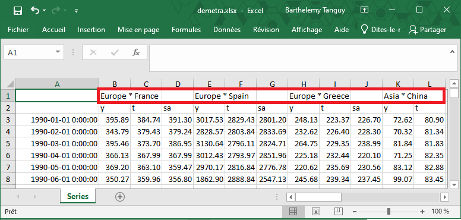
The Content section presents a list of series that will be included into a set of output files. To modify the initial settings click on the grey button in the Content section. The Excel-series window presents two panels:
- the panel on the left includes a list of all valuable output items
- the panel on the right presents the selected output items
Mark the series and use the arrows to change the settings. Confirm your choice with the OK button.
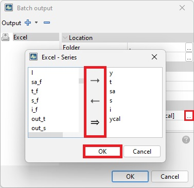
In the case of the TXT format the only available options are folder (location of the file) and series (results included in the output file).

For each output JDemetra+ provides information on the status of the operation. An example is presented below.